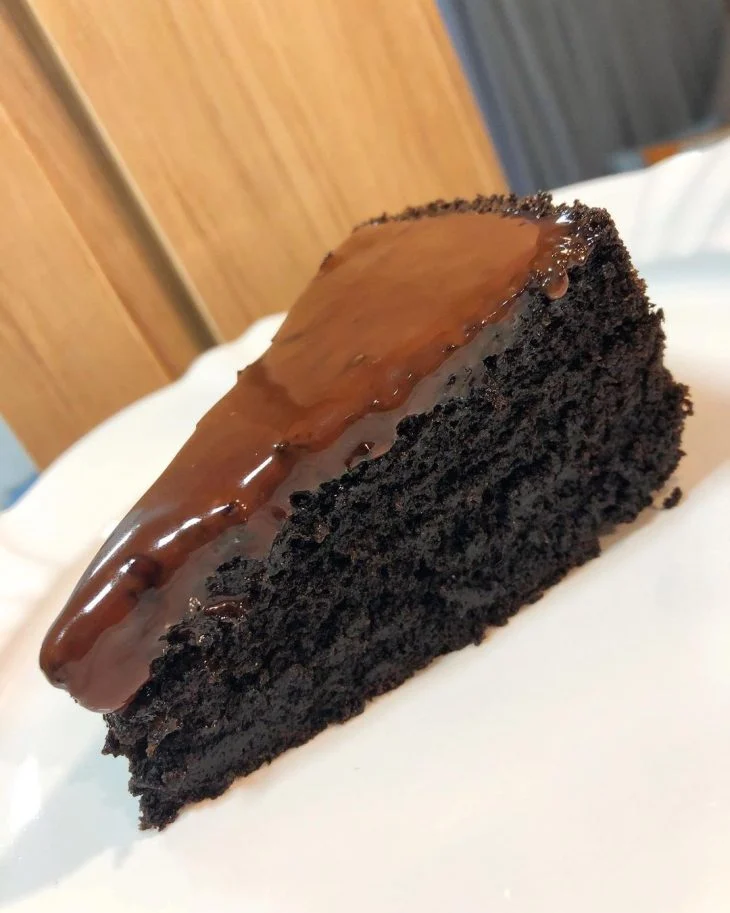

Receita - Bolo de chocolate
Ingredientes
- 4 pacotes de bolacha Negresco ou Oreo (560 g);
- 450 ml de leite;
- 20 g de fermento.
Preparos
Preparo do bolo
- Bata as bolachas (com o recheio) no liquidificador até virar uma farofinha;
- Transfira essa farofa para uma vasilha, adicione o leite e o fermento e misture;
- Despeje a massa em uma forma untada (20 cm), e leve para assar em forno pré-aquecido a 200° graus por 30 minutos.
Preparo da cobertura
- Coloque o creme de leite e o chocolate em uma panela, leve-a ao fogo baixo e misture até atingir um ponto homogêneo;
- Faça furinhos no bolo com uma faca e despeje a mistura da panela sobre o bolo ainda quente.
